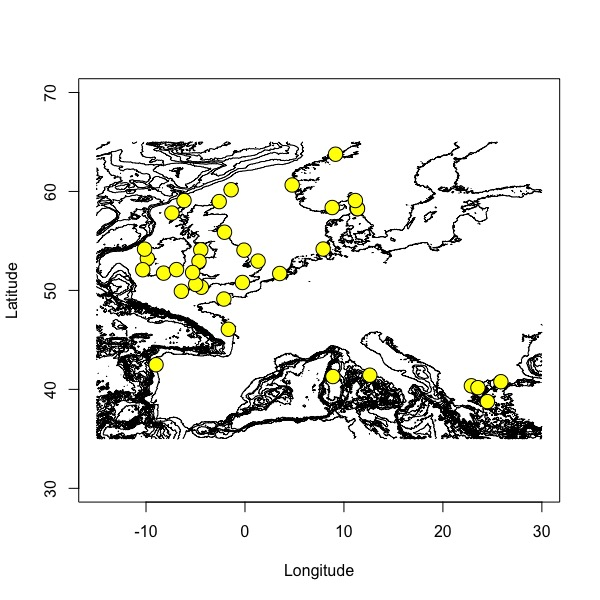
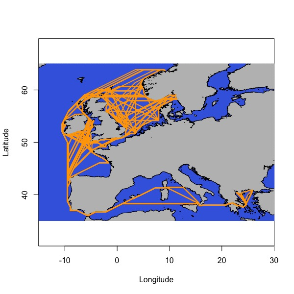
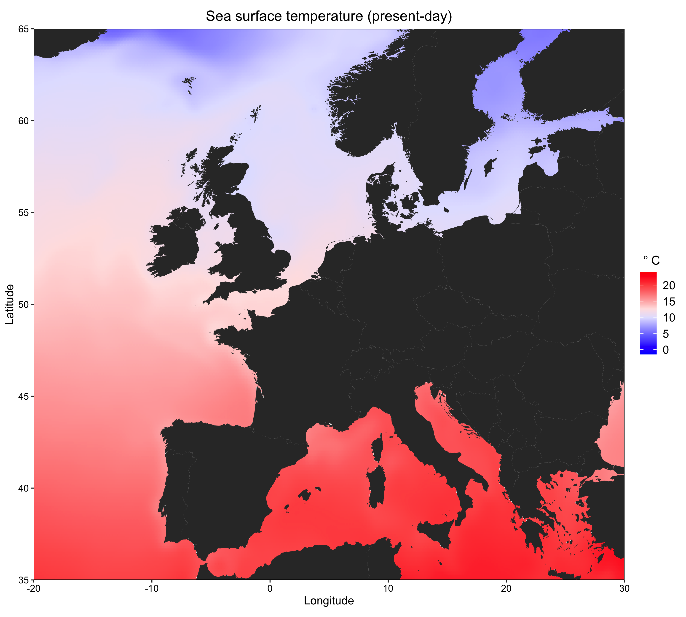
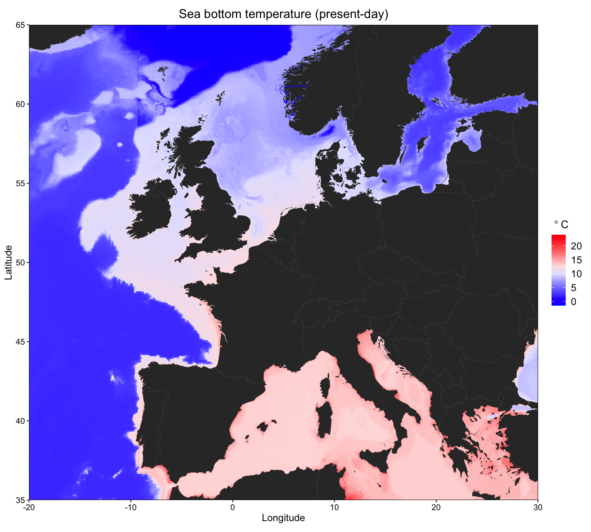
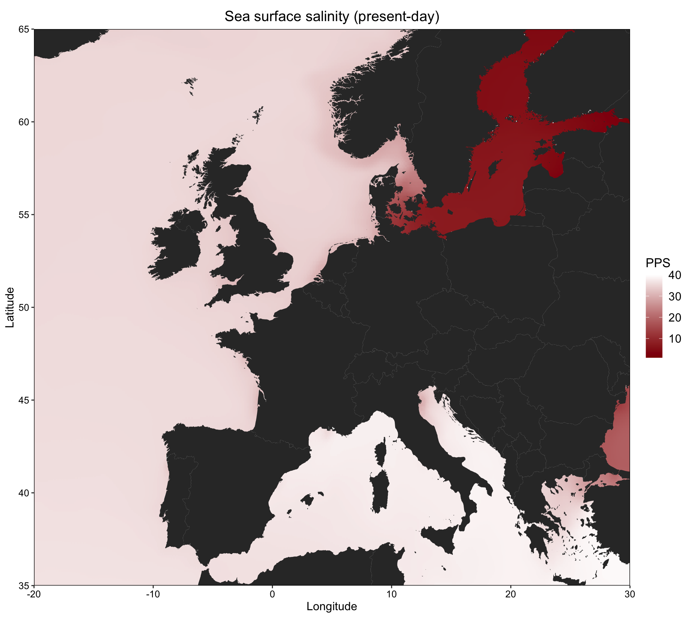
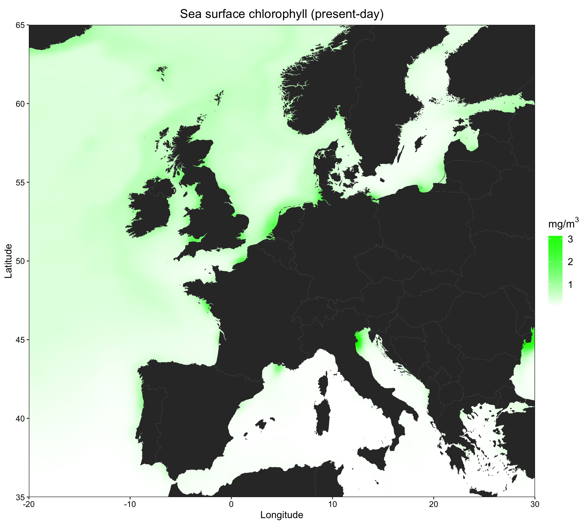
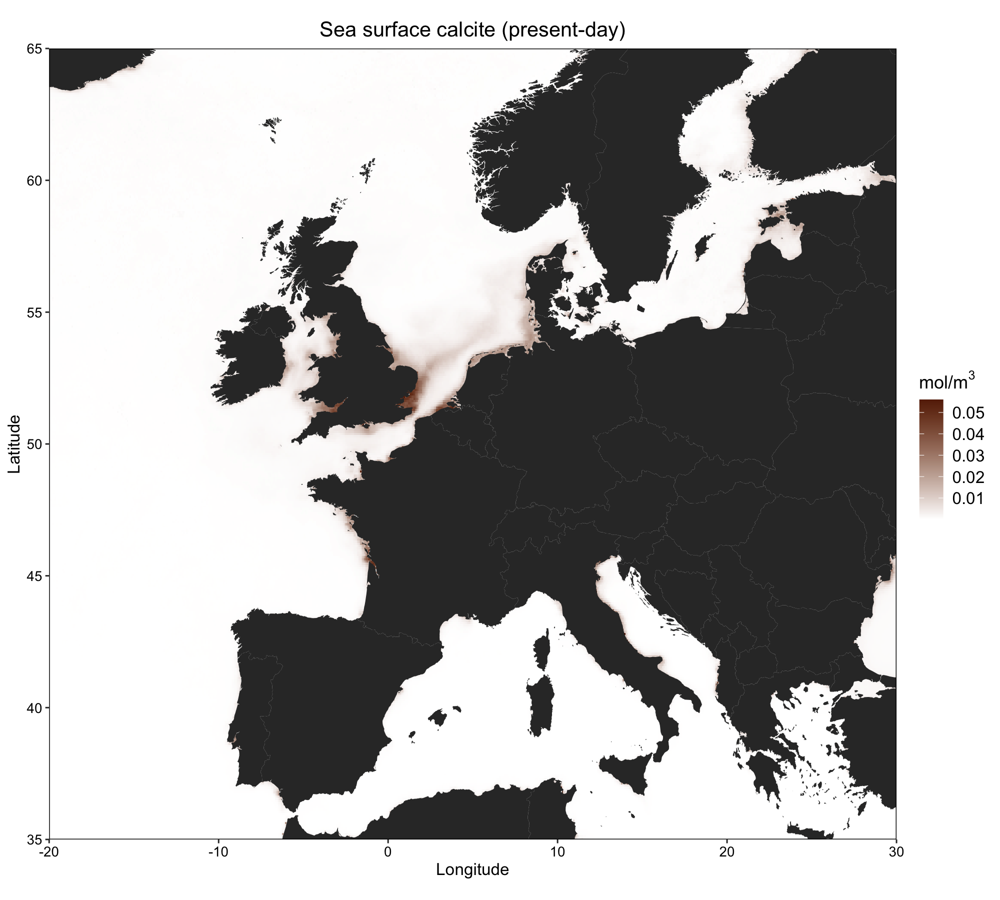
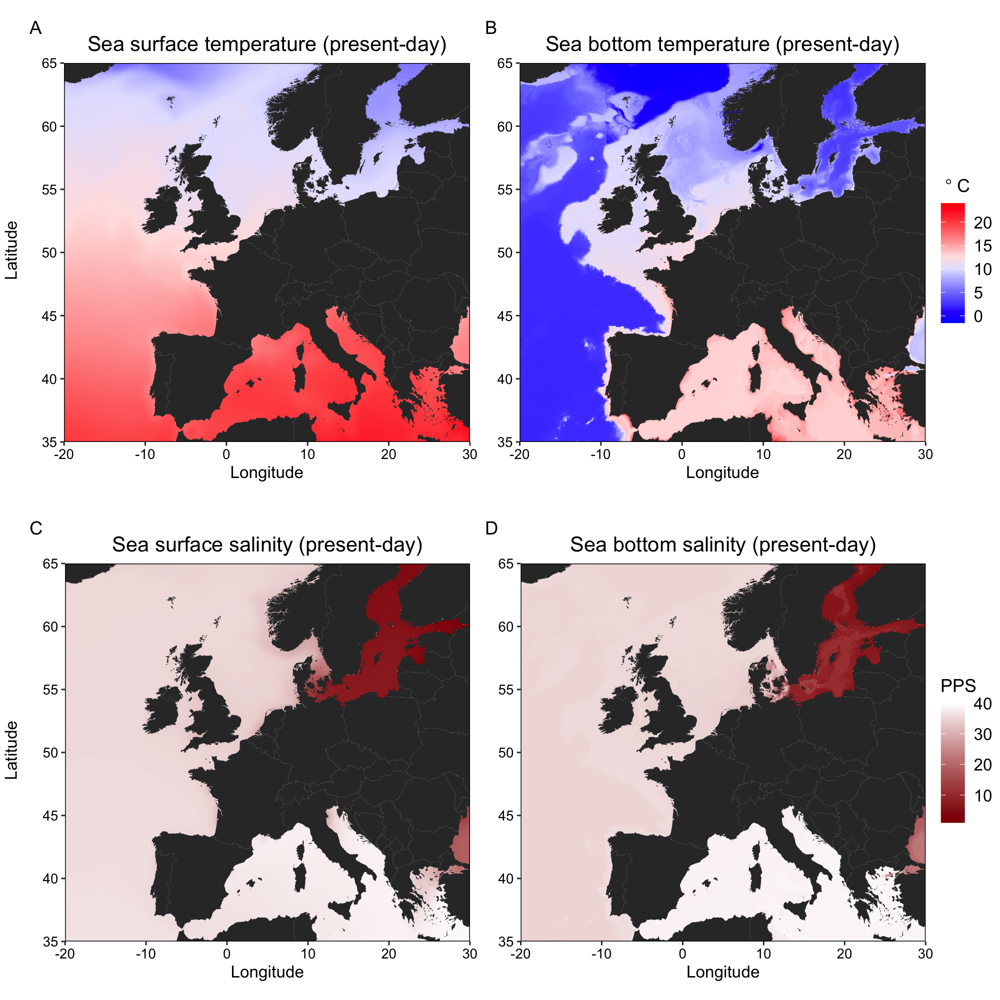
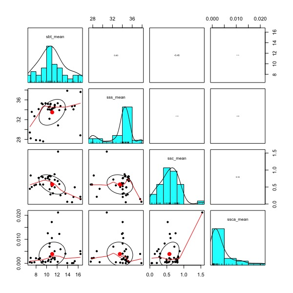
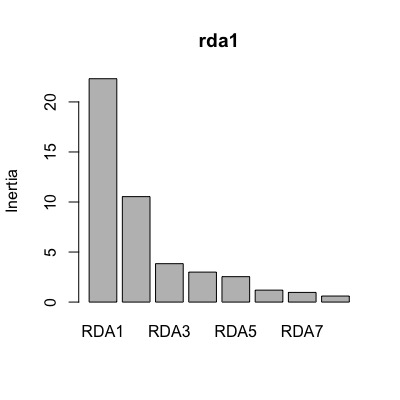

基于R语言的冗余分析（RDA）
本教程使用了在Evolutionary Applications(Jenkins et al.，2019)上发表的欧洲龙虾（Homarus gammarus）种群遗传学研究中的双等位基因SNP基因型数据，数据可通过以下链接下载
原版教程来自Tom-Jenkins
本教程使用的相关R环境的下载可以前往我的github
在使用本教材进行RDA实践操作及基于此利用RDA方法撰写论文时，请按如下格式引用该文献
Jenkins, T. L., Ellis, C. D., & Stevens, J. R. (2019). SNP discovery in European lobster (Homarus gammarus) using RAD sequencing. Conservation Genetics Resources, 11, 253– 257.
数据准备
准备遗传学数据
加载相关R包与环境
# adegenet包加载失败就把所有包更新一下，再重启一下 library(adegenet) library(poppr) library(tidyverse) # setwd('/Users/calice/desktop/Rstats/rda') load("lobster_1278ind_79snps_40pop.RData")
探索相关数据
data_filt nLoc(data_filt) # number of loci nPop(data_filt) # number of sites nInd(data_filt) # number of individuals summary(data_filt$pop) # sample size
整理数据
# 结合撒丁岛的时间样本 popNames(data_filt) = gsub("Sar13", "Sar", popNames(data_filt)) popNames(data_filt) = gsub("Sar17", "Sar", popNames(data_filt)) # 合并拉齐奥的样本 popNames(data_filt) = gsub("Tar", "Laz", popNames(data_filt)) # 合并Idr的时间样本 popNames(data_filt) = gsub("Idr16", "Idr", popNames(data_filt)) popNames(data_filt) = gsub("Idr17", "Idr", popNames(data_filt)) # 新数据 data_filt nPop(data_filt) # number of sites nInd(data_filt) # number of individuals summary(data_filt$pop) # sample size
计算变量
# 计算等位基因频率 allele_freqs = data.frame(rraf( # 为每个地点计算等位基因频率 allele_freqs = data.frame(rraf(data_filt, by_pop=TRUE, correction = FALSE), check.names = FALSE) # 每个SNP只保留两个等位基因中的第一个（p = 1-q） allele_freqs = allele_freqs[, seq(1, dim(allele_freqs)[2], 2)] # 导出 write.csv(allele_freqs, file = "allele_freqs.csv", row.names = TRUE) # 计算次等位基因频率 # 按地点分离genind对象 site_list = seppop(data_filt) names(site_list) # 为每个地点计算次等位基因频率 maf_list = lapply(site_list, FUN = minorAllele) # 将它们加入数据框 maf = as.data.frame(maf_list) %>% t() %>% as.data.frame() head(maf) # 导出 write.csv(maf, file = "minor_allele_freqs.csv", row.names = TRUE)
可视化等位基因频率
# 添加地点记号 allele_freqs$site = rownames(allele_freqs) # 在数据框中添加区域 addregion = function(x){ # If pop label is present function will output the region if(x=="Ale"|x=="The"|x=="Tor"|x=="Sky") y = " Aegean Sea " if(x=="Sar"|x=="Laz") y = " Central Mediterranean " if(x=="Vig"|x=="Brd"|x=="Cro"|x=="Eye"|x=="Heb"|x=="Iom"|x=="Ios"|x=="Loo"|x=="Lyn"|x=="Ork"|x=="Pad"|x=="Pem"|x=="She"|x=="Sbs"|x=="Sul") y = " Atlantic " if(x=="Jer"|x=="Idr"|x=="Cor"|x=="Hoo"|x=="Kil"|x=="Mul"|x=="Ven") y = " Atlantic " if(x=="Hel"|x=="Oos"|x=="Tro"|x=="Ber"|x=="Flo"|x=="Sin"|x=="Gul"|x=="Kav"|x=="Lys") y = " Scandinavia " return(y) } # 增加区域记号 allele_freqs$region = sapply(rownames(allele_freqs), addregion) # 将数据帧转换为长格式 allele_freqs.long = allele_freqs %>% pivot_longer(cols = 1:79, names_to = "allele", values_to = "frequency") allele_freqs.long # 使用factor中的levels参数定义地点的顺序 unique(allele_freqs.long$site) site_order = c("Tro","Ber","Flo","Gul","Kav","Lys","Sin","Hel","Oos", "Cro","Brd","Eye", "She","Ork","Heb","Sul","Cor","Hoo","Iom","Ios","Jer","Kil", "Loo","Lyn","Mul","Pad","Pem","Sbs","Ven", "Idr","Vig", "Sar","Laz","Ale","Sky","The","Tor") allele_freqs.long$site_ord = factor(allele_freqs.long$site, levels = site_order) # 定义区域顺序 region_order = c(" Scandinavia "," Atlantic "," Central Mediterranean ", " Aegean Sea ") allele_freqs.long$region = factor(allele_freqs.long$region, levels = region_order) # 创建配色方案 # blue=#377EB8, green=#7FC97F, orange=#FDB462, red=#E31A1C col_scheme = c("#7FC97F","#377EB8","#FDB462","#E31A1C") # SNP位点到子集的向量 desired_loci = c("7502","25608","31462","35584","42395","53314","58053","65064","65576") desired_loci_ID = sapply(paste(desired_loci, "..", sep = ""), grep, unique(allele_freqs.long$allele), value = TRUE) %>% as.vector() # 绘制所需SNP位点的子集数据集 allele_freqs.sub = allele_freqs.long %>% filter(allele %in% desired_loci_ID) # 设置ggplot2主题 ggtheme = theme( axis.text.x = element_blank(), axis.text.y = element_text(colour="black", size=6), axis.title = element_text(colour="black", size=15), panel.background = element_rect(fill="white"), panel.grid.minor = element_blank(), panel.grid.major = element_blank(), panel.border = element_rect(colour="black", fill=NA, size=0.5), plot.title = element_text(hjust = 0.5, size=18), legend.title = element_blank(), legend.text = element_text(size=15), legend.position = "top", legend.justification = "centre", # facet labels strip.text = element_text(colour="black", size=14) ) # 绘制柱状图 ggplot(data = allele_freqs.sub, aes(x = site_ord, y = frequency, fill = region))+ geom_bar(stat = "identity", colour = "black", size = 0.3)+ facet_wrap(~allele, scales = "free")+ scale_y_continuous(limits = c(0,1), expand = c(0,0))+ scale_fill_manual(values = col_scheme)+ ylab("Allele frequency")+ xlab("Site")+ ggtheme # ggsave("allele_freq.png", width=10, height=8, dpi=600) # ggsave("allele_freq.pdf", width=10, height=8)

准备空间数据
准备运行环境
library(marmap) library(tidyverse) library(ade4) library(adespatial) library(SoDA)
# 计算最小耗费距离 # 使用marmap软件包从NOAA获取水深数据 bathydata = getNOAA.bathy(lon1 = -15, lon2 = 30, lat1 = 35, lat2 = 65, resolution = 2) # 输入各个采样区的坐标 coords = read.csv("coordinates.csv") head(coords) coords.gps = dplyr::select(coords, Lon, Lat) # 获取坐标处的水深 depths = cbind(site = coords$Site, get.depth(bathydata, coords.gps, locator = FALSE)) depths # 看看水深是否大于10m depths$depth <= -10 # 绘制水深数据与坐标 plot(bathydata) points(coords$Lon, coords$Lat, pch = 21, bg = "yellow", col = "black", cex = 2)

Tips:
marmap作者的推荐：
使用最小深度-10来避免路径穿过陆地块；使用最大深度-200来限制通往大陆架的路径
# trans1 = trans.mat(bathydata, min.depth = -10, max.depth = NULL) # save(trans1, file = "transition_object.RData") # load("transition_object.RData") # Compute least-cost paths [long run time] # lc_paths = lc.dist(trans1, coords.gps, res = "path") # save(lc_paths, file = "least_cost_paths.RData")
在地图上绘制距离（很慢）
load("least_cost_paths.RData") # 底图 plot.bathy(bathydata, image= TRUE, land = TRUE, n = 0, bpal = list(c(0, max(bathydata), "grey"), c(min(bathydata), 0, "royalblue"))) # 轨迹 lapply(lc_paths, lines, col = "orange", lwd = 2, lty = 1)

计算最小耗费距离矩阵
lc_dist = lc.dist(trans1, coords.gps, res = "dist") # 转换为矩阵，重命名列和行，并导出为csv文件 lc_mat = as.matrix(lc_dist) colnames(lc_mat) = as.vector(coords$Site) rownames(lc_mat) = as.vector(coords$Site) lc_mat # write.csv(lc_mat, file="lc_distances_km.csv")
计算基于距离的Moran特征向量映射（空间相关矩阵？
# 查看学习资料 vignette("tutorial", package = "adespatial") # 将地理坐标转换为笛卡尔坐标 # 计算欧几里得距离(km) # cart = geoXY(coords$Lat, coords$Lon, unit = 1000) # euclidian_distances = dist(cart, method = "euclidean") dbmems = dbmem(lc_dist, MEM.autocor = "non-null") dbmems # write.csv(dbmems, file = "dbmems.csv", row.names = FALSE)
准备环境数据
数据如下：
平均海面温度(SST):当前(摄氏)
平均海底温度(SBT):当前(摄氏度)
平均海表盐度(SSS):当前(实际盐度标)
平均海底盐度(SBS):当前(实际盐度标)
平均海面叶绿素浓度(SSC):当前(mg/m3)
平均海面钙含量(SSCa):当前(mol/m3)
数据来源：http://www.bio-oracle.org
具体asc数据也可以发邮件找我要
加载环境
library(raster) library(dplyr) # devtools::install_github("ropenscilabs/rnaturalearth") # devtools::install_github("ropenscilabs/rnaturalearthdata") # devtools::install_github("ropenscilabs/rnaturalearthhires") library(rnaturalearth) library(rnaturalearthdata) library(rnaturalearthhires) library(ggplot2) library(RColorBrewer) library(ggpubr)
加载数据
sst.present = raster("Present.Surface.Temperature.Mean.asc") sbt.present = raster("Present.Benthic.Max.Depth.Temperature.Mean.asc") sss.present = raster("Present.Surface.Salinity.Mean.asc") sbs.present = raster("Present.Benthic.Max.Depth.Salinity.Mean.asc") ssc.present = raster("Present.Surface.Chlorophyll.Mean.asc") ssca.present = raster("Present.Surface.Calcite.Mean.asc")
提取环境数据
# 导入坐标 coords = read.csv("coordinates.csv") names(coords) # 用坐标创建空间点 points = SpatialPoints(subset(coords, select = c("Lon","Lat"))) # 利用坐标提取环境数据 df = data.frame(site = coords$Site, sst_mean = extract(sst.present, points), sbt_mean = extract(sbt.present, points), sss_mean = extract(sss.present, points), sbs_mean = extract(sbs.present, points), ssc_mean = extract(ssc.present, points), ssca_mean = extract(ssca.present, points) ) # write.csv(df, file="environmental_data.csv", row.names = FALSE)
绘制热力图
#设置图的边界 (xmin, xmax, ymin, ymax) extent(points) boundary = extent(-20, 30, 35, 65) boundary # 裁剪栅格到边界并转换成点的数据框 sst.df = crop(sst.present, y = boundary) %>% rasterToPoints() %>% data.frame() sbt.df = crop(sbt.present, y = boundary) %>% rasterToPoints() %>% data.frame() sss.df = crop(sss.present, y = boundary) %>% rasterToPoints() %>% data.frame() sbs.df = crop(sbs.present, y = boundary) %>% rasterToPoints() %>% data.frame() ssc.df = crop(ssc.present, y = boundary) %>% rasterToPoints() %>% data.frame() ssca.df = crop(ssca.present, y = boundary) %>% rasterToPoints() %>% data.frame() # 加载基础底图 basemap = ne_countries(scale = "large") # 裁剪到边界并转换为数据框 basemap = crop(basemap, y = boundary) %>% fortify()
准备ggplot主题
# 准备ggplot主题 ggtheme = theme(axis.title = element_text(size = 12), axis.text = element_text(size = 10, colour = "black"), panel.border = element_rect(fill = NA, colour = "black", size = 0.5), legend.title = element_text(size = 13), legend.text = element_text(size = 12), plot.title = element_text(size = 15, hjust = 0.5), panel.grid = element_blank()) # 准备颜色 temp.cols = colorRampPalette(c("blue","white","red")) sal.cols = colorRampPalette(c("darkred","white")) chlor.cols = colorRampPalette(c("white","green")) calct.cols = colorRampPalette(c("white","#662506"))
绘制海洋表明温度
sst.plt = ggplot()+ geom_tile(data = sst.df, aes(x = x, y = y, fill = sst.df[, 3]))+ geom_polygon(data = basemap, aes(x = long, y = lat, group = group))+ coord_quickmap(expand = F)+ xlab("Longitude")+ ylab("Latitude")+ ggtitle("Sea surface temperature (present-day)")+ scale_fill_gradientn(expression(~degree~C), colours = temp.cols(10), limits = c(-1.5,24))+ ggtheme sst.plt ggsave("1.sst_heatmap.png", width = 10, height = 9, dpi = 600) # ggsave("Rplot15.png", width = 10, height = 9, dpi = 300)

绘制海底温度
sbt.plt = ggplot()+ geom_tile(data = sbt.df, aes(x = x, y = y, fill = sbt.df[, 3]))+ geom_polygon(data = basemap, aes(x = long, y = lat, group = group))+ coord_quickmap(expand = F)+ xlab("Longitude")+ ylab("Latitude")+ ggtitle("Sea bottom temperature (present-day)")+ scale_fill_gradientn(expression(~degree~C), colours = temp.cols(10), limits = c(-1.5,24))+ ggtheme sbt.plt ggsave("2.sbt_heatmap.png", width = 10, height = 9, dpi = 600)

绘制海面盐度
sss.plt = ggplot()+ geom_tile(data = sss.df, aes(x = x, y = y, fill = sss.df[, 3]))+ geom_polygon(data = basemap, aes(x = long, y = lat, group = group))+ coord_quickmap(expand = F)+ xlab("Longitude")+ ylab("Latitude")+ ggtitle("Sea surface salinity (present-day)")+ scale_fill_gradientn("PPS", colours = sal.cols(10), limits = c(1,40))+ ggtheme sss.plt ggsave("3.sss_heatmap.png", width = 10, height = 9, dpi = 600)

绘制海底盐度
sbs.plt = ggplot()+ geom_tile(data = sbs.df, aes(x = x, y = y, fill = sbs.df[, 3]))+ geom_polygon(data = basemap, aes(x = long, y = lat, group = group))+ coord_quickmap(expand = F)+ xlab("Longitude")+ ylab("Latitude")+ ggtitle("Sea bottom salinity (present-day)")+ scale_fill_gradientn("PPS", colours = sal.cols(10), limits = c(1,40))+ ggtheme sbs.plt ggsave("4.sbs_heatmap.png", width = 10, height = 9, dpi = 600)

绘制海面叶绿体浓度
ssc.plt = ggplot()+ geom_tile(data = ssc.df, aes(x = x, y = y, fill = ssc.df[, 3]))+ geom_polygon(data = basemap, aes(x = long, y = lat, group = group))+ coord_quickmap(expand = F)+ xlab("Longitude")+ ylab("Latitude")+ ggtitle("Sea surface chlorophyll (present-day)")+ scale_fill_gradientn(expression(paste("mg/m"^"3")), colours = chlor.cols(10))+ ggtheme ssc.plt ggsave("5.ssc_heatmap.png", width = 10, height = 9, dpi = 600)

绘制海面钙含量
ssca.plt = ggplot()+ geom_tile(data = ssca.df, aes(x = x, y = y, fill = ssca.df[, 3]))+ geom_polygon(data = basemap, aes(x = long, y = lat, group = group))+ coord_quickmap(expand = F)+ xlab("Longitude")+ ylab("Latitude")+ ggtitle("Sea surface calcite (present-day)")+ scale_fill_gradientn(expression(paste("mol/m"^"3")), colours = calct.cols(10))+ ggtheme ssca.plt ggsave("6.ssca_heatmap.png", width = 10, height = 9, dpi = 600)

组合图片
# 组合两张关于温度的 figAB = ggarrange(sst.plt + labs(tag = "A") + ggtheme + theme(axis.title.y = element_blank()), sbt.plt + labs(tag = "B") + ggtheme + theme(axis.title.y = element_blank()), ncol = 2, common.legend = TRUE, legend = "right") figAB = annotate_figure(figAB, left = text_grob("Latitude", size = 12, rot = 90)) # 组合两张关于盐分的 figCD = ggarrange(sss.plt + labs(tag = "C") + ggtheme + theme(axis.title.y = element_blank()), sbs.plt + labs(tag = "D") + ggtheme + theme(axis.title.y = element_blank()), ncol = 2, common.legend = TRUE, legend = "right") figCD = annotate_figure(figCD, left = text_grob("Latitude", size = 12, rot = 90)) # 把他们加起来 fig = ggarrange(figAB, figCD, nrow = 2) ggsave("7.temp_sal_heatmap.png", width = 10, height = 10, dpi = 600) # ggsave("7.temp_sal_heatmap.pdf", width = 10, height = 10)

进行冗余分析
加载环境与数据
library(tidyverse) library(psych) library(adespatial) library(vegan) # 加载基因数据 allele_freqs = read.csv("allele_freqs.csv", row.names = 1, check.names = FALSE) # 加载空间数据 dbmem.raw = read.csv("dbmems.csv") # 加载环境数据 env.raw = read.csv("environmental_data.csv", row.names = 1) # 加载随机种子 set.seed(123)
多重共线性检验
# 对环境变量进行相关检验 pairs.panels(env.raw, scale = TRUE) # 移除相关性强的变量 env.data = subset(env.raw, select = -c(sst_mean, sbs_mean)) pairs.panels(env.data, scale = TRUE)

识别重要变量
# 使用前向选择来确定重要的环境变量 env.for = forward.sel(Y = allele_freqs, X = env.data, alpha = 0.01) env.for # variables order R2 R2Cum AdjR2Cum F pvalue # 1 sbt_mean 1 0.31150411 0.3115041 0.2918328 15.835453 0.001 # 2 sss_mean 2 0.09469125 0.4061954 0.3712657 5.421821 0.001 # 3 ssca_mean 4 0.07470387 0.4808992 0.4337083 4.749035 0.005 # 使用前向选择来确定重要的dbmems dbmem.for = forward.sel(Y = allele_freqs, X = dbmem.raw, alpha = 0.01) dbmem.for # variables order R2 R2Cum AdjR2Cum F pvalue # 1 MEM1 1 0.51661196 0.5166120 0.5028009 37.405598 0.001 # 2 MEM2 2 0.08518943 0.6018014 0.5783780 7.273860 0.001 # 3 MEM5 5 0.08000465 0.6818060 0.6528793 8.297309 0.001 # 4 MEM3 3 0.04720013 0.7290062 0.6951319 5.573574 0.001 # 5 MEM6 6 0.02189658 0.7509028 0.7107258 2.725016 0.010
我们只将重要的自变量子集包含在RDA中
env.sig = subset(env.data, select = env.for$variables) str(env.sig) dbmem.sig = subset(dbmem.raw, select = dbmem.for$variables) str(dbmem.sig) # 组合这些变量 env.dbmems = cbind(env.sig, dbmem.sig) str(env.dbmems)
进行冗余分析
# 为所有变量进行冗余分析 rda1 = rda(allele_freqs ~ ., data = env.dbmems, scale = TRUE) rda1 # Call: rda(formula = allele_freqs ~ sbt_mean + sss_mean + # ssca_mean + MEM1 + MEM2 + MEM5 + MEM3 + MEM6, data = env.dbmems, # scale = TRUE) # Inertia Proportion Rank # Total 79.0000 1.0000 # Constrained 44.9918 0.5695 8 # Unconstrained 34.0082 0.4305 28 # Inertia is correlations # Eigenvalues for constrained axes: # RDA1 RDA2 RDA3 RDA4 RDA5 RDA6 RDA7 RDA8 # 22.319 10.537 3.837 2.995 2.540 1.194 0.966 0.604 # Eigenvalues for unconstrained axes: # PC1 PC2 PC3 PC4 PC5 PC6 PC7 PC8 # 4.940 3.197 2.488 2.400 2.121 1.732 1.655 1.617 # (Showing 8 of 28 unconstrained eigenvalues)
Model summaries
adjusted Rsquared
RsquareAdj(rda1) # $r.squared # [1] 0.5695167 # $adj.r.squared # [1] 0.4465215
方差膨胀因子
# variance inflation factor (<10 OK) vif.cca(rda1)
全模型
anova.cca(rda1, permutations = 1000) # sbt_mean sss_mean ssca_mean MEM1 MEM2 MEM5 MEM3 # 8.590561 1.791776 1.979065 7.012236 2.107733 1.105811 2.055020 # MEM6 # 1.078194
每个变量
anova.cca(rda1, permutations = 1000, by="margin") # Permutation test for rda under reduced model # Marginal effects of terms # Permutation: free # Number of permutations: 1000 # Model: rda(formula = allele_freqs ~ sbt_mean + sss_mean + ssca_mean + MEM1 + MEM2 + MEM5 + MEM3 + MEM6, data = env.dbmems, scale = TRUE) # Df Variance F Pr(>F) # sbt_mean 1 0.913 0.7513 0.662338 # sss_mean 1 1.868 1.5381 0.125874 # ssca_mean 1 1.948 1.6040 0.082917 . # MEM1 1 4.059 3.3418 0.001998 ** # MEM2 1 1.771 1.4579 0.182817 # MEM5 1 7.091 5.8379 0.000999 *** # MEM3 1 1.814 1.4934 0.102897 # MEM6 1 2.973 2.4479 0.038961 * # Residual 28 34.008 # --- # Signif. codes: 0 ‘***’ 0.001 ‘**’ 0.01 ‘*’ 0.05 ‘.’ 0.1 ‘ ’ 1
每个标准轴的解释方差
summary(eigenvals(rda1, model = "constrained")) screeplot(rda1)

RDA的可视化
# 创建一个数据框来正确地为区域着色 col_dframe = data.frame("site" = rownames(allele_freqs)) # 一个函数将区域标签添加到数据帧 addregion = function(x){ # If pop label is present function will output the region if(x=="Ale"|x=="The"|x=="Tor"|x=="Sky") y = "Aegean Sea" if(x=="Sar"|x=="Laz") y = "Central Mediterranean" if(x=="Vig"|x=="Brd"|x=="Cro"|x=="Eye"|x=="Heb"|x=="Iom"|x=="Ios"|x=="Loo"|x=="Lyn"|x=="Ork"|x=="Pad"|x=="Pem"|x=="She"|x=="Sbs"|x=="Sul") y = "Atlantic" if(x=="Jer"|x=="Idr"|x=="Cor"|x=="Hoo"|x=="Kil"|x=="Mul"|x=="Ven") y = "Atlantic" if(x=="Hel"|x=="Oos"|x=="Tro"|x=="Ber"|x=="Flo"|x=="Sin"|x=="Gul"|x=="Kav"|x=="Lys") y = "Scandinavia" return(y) } # 增加区域标记 col_dframe$region = sapply(col_dframe$site, addregion) # 增加因子水平 region_order = c("Scandinavia","Atlantic","Central Mediterranean", "Aegean Sea") col_dframe$region = factor(col_dframe$region, levels = region_order) # 创建调色板 # blue=#377EB8, green=#7FC97F, orange=#FDB462, red=#E31A1C cols = c("#7FC97F","#377EB8","#FDB462","#E31A1C")
RDA的可视化
png("rda.png", width = 8, height = 7, units = "in", res = 600) plot(rda1, type="n", scaling = 3) title("Seascape redundancy analysis") # SITES points(rda1, display="sites", pch=21, scaling=3, cex=1.5, col="black", bg=cols[col_dframe$region]) # sites # text(rda1, display="sites", scaling = 3, col="black", font=2, pos=4) # PREDICTORS text(rda1, display="bp", scaling=3, col="red1", cex=1, lwd=2) # SNPS # text(rda1, display="species", scaling = 3, col="blue", cex=0.7, pos=4) # SNPs # LEGEND legend("bottomleft", legend=levels(col_dframe$region), bty="n", col="black", pch=21, cex=1.2, pt.bg=cols) # OTHER LABELS adj.R2 = round(RsquareAdj(rda1)$adj.r.squared, 3) mtext(bquote(italic("R")^"2"~"= "~.(adj.R2)), side = 3, adj = 0.5) dev.off()

部分冗余分析
Partial redundancy analysis
在控制地理位置的同时执行RDA
pRDA = rda(allele_freqs ~ sbt_mean + sss_mean + ssca_mean + Condition(MEM1+MEM2+MEM3+MEM5), data = env.dbmems, scale = TRUE) pRDA RsquareAdj(pRDA) # adjusted Rsquared vif.cca(pRDA) # variance inflation factor (<10 OK) anova.cca(pRDA, permutations = 1000) # full model anova.cca(pRDA, permutations = 1000, by = "margin") # per variable
可视化
png("partial_rda.png", width = 9, height = 7, units = "in", res = 600) plot(pRDA, type="n", scaling = 3) title("Seascape partial redundancy analysis") # SITES points(pRDA, display="sites", pch=21, scaling=3, cex=1.5, col="black", bg=cols[col_dframe$region]) # sites text(pRDA, display="sites", scaling = 3, col="black", font=2, pos=4) # PREDICTORS text(pRDA, display="bp", scaling=3, col="red1", cex=1, lwd=2) # SNPS # text(pRDA, display="species", scaling = 3, col="blue", cex=0.7, pos=4) # SNPs # LEGEND legend("topleft", legend=levels(col_dframe$region), bty="n", col="black", pch=21, cex=1.2, pt.bg=cols) # OTHER LABELS adj.R2 = round(RsquareAdj(pRDA)$adj.r.squared, 3) mtext(bquote(italic("R")^"2"~"= "~.(adj.R2)), side = 3, adj = 0.5) dev.off()

Candidate SNPs for local adaptation？
考察候选核苷酸多态性和当地适宜性的关系
# 在图中，哪个轴比较重要呢？ anova.cca(pRDA, permutations = 1000, by = "axis") # 提取带显著性的SNP的载荷轴 snp.load = scores(pRDA, choices = 1, display = "species") # 绘制SNP载荷直方图 hist(snp.load, main = "SNP loadings on RDA1")

确定分布尾部的SNP
Function from https://popgen.nescent.org/2018-03-27_RDA_GEA.html
outliers = function(x,z){ lims = mean(x) + c(-1, 1) * z * sd(x) # find loadings +/-z sd from mean loading x[x < lims[1] | x > lims[2]] # locus names in these tails } # x = loadings vector, z = number of standard deviations to use candidates = outliers(x = snp.load, z = 2.5) Convert matric to dataframe snp.load.df = snp.load %>% as.data.frame snp.load.df$SNP_ID = rownames(snp.load.df) str(snp.load.df) # Extract locus ID snp.load.df %>% dplyr::filter(RDA1 %in% candidates)